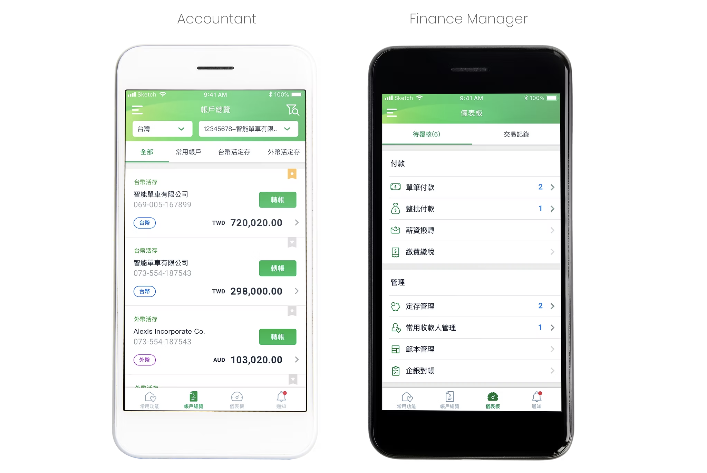

FinTech · Mobile App · B2B
Global MyB2B
Corporate mobile banking for Cathay United Bank — role-based UX built for accountants and finance managers
Corporate mobile banking for Cathay United Bank — role-based UX built for accountants and finance managers
Corporate banking users had no mobile-first tool that matched the complexity of their daily workflows. The existing experience lacked role clarity, flexibility, and visibility into payment status.


Two distinct role types emerged from stakeholder interviews — each with different priorities, access levels, and pain points.
To be able to check balance anytime, and review the trading history is important. Need to set up payment reminders and low balance notifications.
Need a review list of pending deals, and to be reminded to approve and decline in time. Items need clear amounts and timely pending-approval reminders.
Rather than one homepage for all, each user is directed to a role-specific view on login. The information hierarchy is reordered based on what each role actually needs to act on first.
